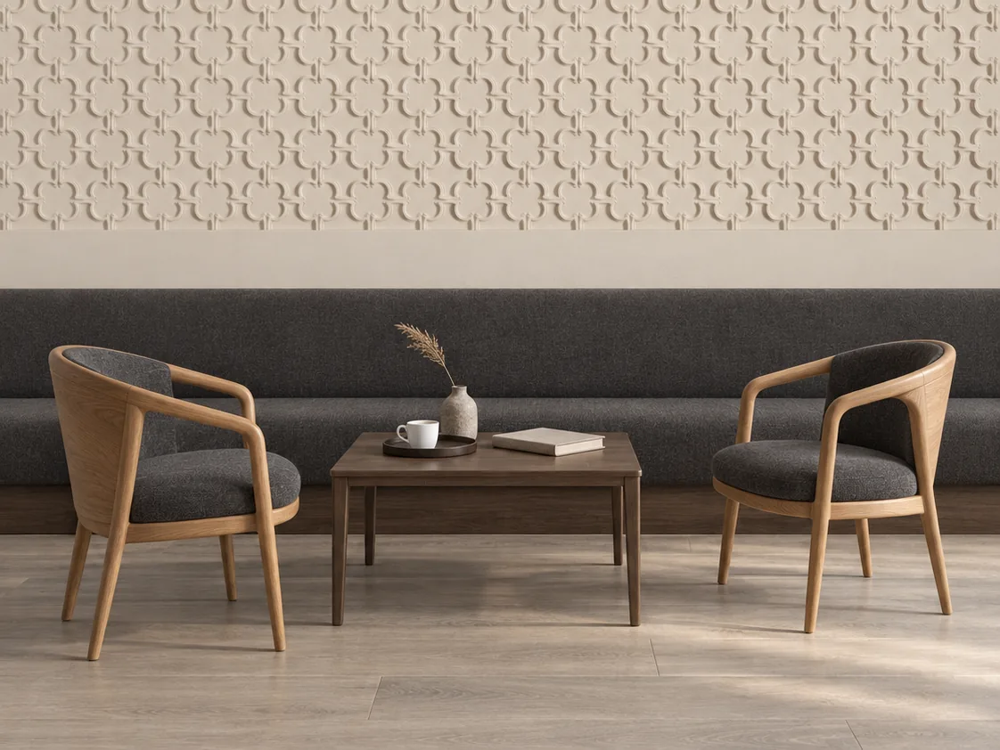

Studio Designs
Ricercar
A lattice built from the Gothic quatrefoil. The pattern repeats every 600 mm, and the lattice carries on across the wall as panels are laid side by side.




- Size
- 600 × 600 mm
- Relief
- 6 mm
- Layout
- Repeating field, every 600 mm
- Material
- Lumina PMAG™ (polymer-modified composite gypsum)
- Surface
- Paint-ready, or with an artisan finish

The drawing